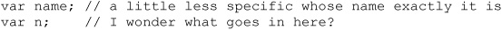
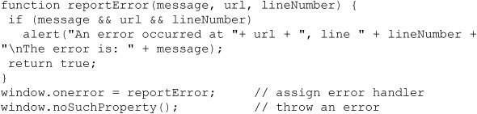
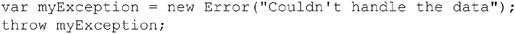
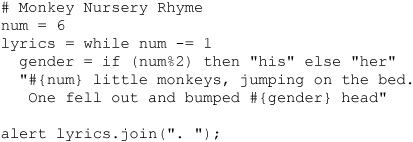

In our final chapter, we explore a few topics that are not as clearly reference material as previous chapters. Our first goal will be to put readers on, or remind them of, the path of writing better JavaScript. Some of the advice will consist of simple ideas not unique to JavaScript, while others might address the style, error, or programming techniques somewhat unique to the environment. We also take a few moments to discuss libraries. We have purposefully avoided spending much time on libraries so far in the book since we are focused on the core language and native browser and document APIs as opposed to the abstractions written on top of them. We also call out two quite important topics that plague the use of JavaScript on public-facing Web sites and applications, namely performance and security. Finally, we conclude the book almost where we started, by discussing the trends of JavaScript, particularly in light of its use.
Writing correct JavaScript syntax is a far cry from writing elegant code with JavaScript. When discussing the idea of code quality, it reminds one of the authors of the challenge of writing motivating prose more than anything. There is much one can do in writing to try to keep things interesting, but it often becomes more art than science. When it comes to writing code, it seems as though we are quick to blame the tool or language, rather than the practitioner. Somehow the “ugly” or “bad” parts of JavaScript are what caused the programmer to write awful code and not the rush of a timeline, difficulty of the problem, lack of experience, or convoluted thought process!? We’d like this argument to be true so we could then blame the English language for our struggles with writing motivating prose!
While it might be nice to blame a language for our challenges writing or coding, it just isn’t so. Certainly, a language may influence our efforts as programmers somewhat, but it is really up to us to craft good code. So we take a few moments to remind ourselves of some ideas we ought to consider when writing nice, correct, and safe code quickly. We start first with just a brief discussion of style before moving on to more practical thoughts on writing safe code and addressing errors, concluding with some demonstration of the benefits of code reuse through the use of popular JavaScript frameworks and libraries.
Much has been said about writing good code that is somewhat agnostic of the language it is written in, whether it is in JavaScript or not. Interestingly, we see that there is in fact no one true way to write code, despite what many may think. Even the idea of choosing a variable name can be wrought with trade-offs. Do we aim for readability?
Or do we aim for terseness, for ease of typing and speed of download?

We might find that, given JavaScript’s scoping rules, we want to add indicators of availability:
Or we might like to hint at what the variable should contain, considering JavaScript’s weak typing:
Should the value change? If it shouldn’t since we lack support for constants, we might hint at it:
Similarly, we might be employing a private property or method that we want to advise against direct invocation or access:
We might find that the terseness of writing is beneficial:
Alternatively, we might want to confuse or obfuscate what we are doing:
For better or worse, this might happen because a teacher is having fun in an example or someone is inadvertently creating some inherent job security:
To be honest, there really isn’t a clear answer to any style question. We believe we see hints as to the right direction to take in some cases. For example, in casing, we might find that following the camel-back style of JavaScript is useful:
But consider that distinguishability between our functions and those provided by the browser or host environment is not immediately obvious. We then wonder why constructor functions are initial capitalized:
Clearly, casing can be useful for more than just following a pattern. It has trade-offs as clear as the choice of names.
We can fight about whitespace, nesting, and braces, arguing the merits of doing this:
We can even acknowledge that, in certain ways, omitting the braces altogether makes the most sense, at least for simple examples:
It should be clear with our examples that we could go on for pages, showing just how pointless is this exercise to find some clear winner for how to write code (or prose). There really are good reasons for everything, depending on the context. There are times when being explicit is useful and times when it isn’t.
You might think we are aiming too low in this discussion. Instead, maybe we should debate the merits of large-scale coding problems. Is object-oriented programming (OOP) clearly more appropriate than, say, procedural-style or functional coding? That question really isn’t a foregone conclusion if you’ve ever had the pleasure of staring at a wall-sized diagram showing the relationships of objects in a relatively simple program. In that case, the particular programmer was not practicing quality OOP but instead something different, where we move the letter “P” to the front of the acronym. The same could be said for the five-line brain-teasing chained functions with tons of implied iteration or even recursion. Sure, it’s elegant, but can you figure it out a week later?
Even beyond the bad programmer problem, determining the best way at the high level is just as mixed of an answer as when posed for coding constructs. Consider that the beautiful object inheritance pattern or recursive function comes with a price. At scale, the memory weight, stack size, scope resolution time, and other side effects of high-level beauty might come at a performance price that’s just too steep for success. Yet untangling some straight-line code with every trick in the book might be both a debugging nightmare and a support impossibility. Sure, your code works, but it is a giant ball of mud now! There is only one thing that is sure—trade-offs always exist.
Seriously, though, we really aren’t trying to give up. You should be thoughtful and consistent in how you end up coding, both at the high object or algorithm level as well as at the statement level We also must acknowledge that our style choices can quickly spill into syntax or safety issues. Poorly chosen names might not just confuse, they might collide with existing properties in the host environment or any included code. Verbose clear code without modification might affect download. Code written in a literate style may not minify without breaking. Comments aimed to be helpful for future maintainers might be read by nefarious individuals bent on exploiting such useful information, and on and on we see that the way we write our code does matter.
So we question, does a particular style support some primary goal of the code? If the JavaScript needs to be continually maintained by others over a long time, our style should be readable and heavily documented. If our code must be fast, it may need to be optimized. If it needs to be safe, it may need to be wordy and careful in all its checks. If it needs to be protected, it might need to be obfuscated. Fortunately, we tend to find that in the case of performance and security, tools can help us focus less on writing for such concerns but more for future readers as they can optimize or obfuscate for us. In this sense, the best route for writing code is less for elegance than for clarity. Verbosity might be alright in naming and approach if it helps readability, though if it is too wordy, it will hurt. Whatever we do, we want to be clear, and if we can’t we must document what is going on.
As we have seen throughout the book, JavaScript usage in Web sites can be very sophisticated. JavaScript can be used to build large, class-based applications, and it is not unusual to see an application span multitudes of files and thousands of lines.
By now, we should know that JavaScript supports two types of comments:
• Single-line comments starting with //: var lives = 9; // number of cat lives
These run to the end of the current line only.
• Multiline comments wrapped in /* and */: /*
While, syntactically, there isn’t much to say about commenting other than that it is necessary to avoid nesting them, usage-wise, there is quite a bit to say. Obviously, the purpose of commenting is to illuminate the meaning of some part of the code, include license or legal information, or—in the case of many large programs—create documentation from the source code. We look at this idea to encourage readers unfamiliar with the approach of commenting for documentation to utilize it more.
The basic idea of commenting for documentation is to embed special comments directly in source code and then have a tool generate documentation from the contents of these comments. Currently, one popular syntax for accomplishing this is JSDoc. JSDoc derives from JavaDoc, which does the same thing for Java applications. There are a number of tools for converting JSDoc into documentation. In the context of this chapter, we will be using the JSDoc Toolkit (http://code.google.com/p/jsdoc-toolkit/), but the syntax should work for any JSDoc tool.
Documentation is added directly in the JavaScript source files using comments. The comments are of the following form:
The comments have a number of tags to indicate what is being documented. To give readers a sense of what might be included within JSDoc-formatted comments, Table 18-1 shows all of the available tags.
Table 18-1 Summary of JSDoc Comment Tags
The top of a JavaScript file includes information about the file. There are a few tags that can be used to describe the page’s contents:
Documenting functions starts with a description that can be provided as the first line of the comment with no tag or with the @description tag. It includes @param tags for each function argument. The @param tag follows this format:
Only the paramName is required.
Finally, the function documentation will include an optional @returns line that will indicate what is being returned from the function. This line is of the following format:
Both returnType and returnDescription are optional.
A documented function will look like the following:
Documenting a class occurs in a similar fashion. A @constructor tag is used to indicate that a function is the constructor for a class. Then @property tags can be used to describe the properties of the class. The @property tag is identical to the @param tag:
Only the propertyName is required.
Once you finish adding comments to your script, you can run a JSDoc tool on the code. The tool will generate an API file, as shown in Figure 18-1. The file is typically in HTML, but some tools support other formats.
Figure 18-1 Sample JSDoc output
All programmers make mistakes, and a large part of becoming a more proficient developer is honing your instincts for finding and rooting out errors in your code. Debugging is a skill that is best learned through experience, and although basic debugging practices can be taught, each programmer must develop his or her own approach. In this section, we cover tools and techniques that can help you with these tasks.
The most basic way to track down errors is by turning on error information in your browser. By default, Internet Explorer shows an error icon in the status bar when an error occurs on the page:
Double-clicking this icon takes you to a dialog box showing information about the specific error that occurred.
Because this icon is easy to overlook, Internet Explorer gives you the option to automatically show the Error dialog box whenever an error occurs. To enable this option, select Tools | Internet Options, and click the Advanced tab. Check the “Display a Notification About Every Script Error” box, as shown here:
The other major browsers send error messages to a special window called the JavaScript Console. You can view the Console by pulling it up in the Tools menu. In Firefox, it’s under Tools | Web Development | Error Console. Under Chrome, it’s under Tools | JavaScript Console. In Safari, it is necessary to first enable the Develop menu in the Advanced menu of preferences. Then view the console by going to Develop | Show Error Console. Finally, under Opera, it’s at Tools | Advanced | Error Console. Since these browsers give no visual indication when an error occurs, you must keep the JavaScript Console open and watch for errors as your script executes.
Error notifications that show up on the JavaScript Console or through Internet Explorer dialog boxes are the result of both syntax and runtime errors. Loading a file with a syntax error such as var myString = “This string doesn’t terminate results in the error dialog and JavaScript Console messages in Figure 18-2.
Figure 18-2 Example error messages—dialog and console
A very helpful feature of this kind of error reporting is that it includes the line number at which the error occurred. However, you should be aware that, occasionally, line numbers can become skewed as the result of externally linked files. Most of the time, error messages are fairly easy to decipher, but some messages are less descriptive than others, so it is useful to explicitly mention some common mistakes here.
If we are going to address our errors reasonably, we need to explore the multitude of errors that may be encountered. So, before launching into a discussion of how JavaScript errors can be found and handled, it is useful to understand the taxonomy of errors found in typical scripts. The wide variety of errors that can occur during the execution of a script can be roughly placed into three categories: syntax, runtime, and semantic errors.
Syntax Errors Of the three types of errors, syntax errors are the most obvious. They occur when you write code that somehow violates the rules of the JavaScript language. For example, writing the following is a syntax error because the * operator requires two expressions to operate on, and “y +” does not constitute a valid expression:
Another example is shown here, where the string literal isn’t properly quoted:
Syntax errors are generally fatal in the sense that they are errors from which the interpreter cannot recover. The reason they are fatal is that they introduce ambiguity, which the language syntax is specifically designed to avoid. Sometimes the interpreter can make some sort of assumption about what the programmer intended and can continue to execute the rest of the script. For example, in the case of a nonterminated string literal, the interpreter might assume that the string ends at the end of the line. However, scripts with syntax errors should, for all intents and purposes, be considered incorrect, even if they do run in some manner because they do not constitute a valid program and their behavior can therefore be erratic, destructive, or otherwise anomalous.
Luckily, syntax errors are fairly easy to catch because they are immediately evident when the script is parsed before being executed. You cannot hide a syntax error from the interpreter in any way except by placing it in a comment. Even placing it inside a block that will never be executed, as in the following example, will result in an error:
The reason, as we have stated, is that these types of errors show up during the parsing of the script, a step that occurs before execution.
You can easily avoid syntax errors by turning on error warnings in the browser and then loading the script or by using one of the debugging methods discussed later in this chapter.
Runtime Errors The second category of errors are runtime errors, which are exactly what they sound like: errors that occur while the script is running. These errors result from JavaScript that has the correct syntax but that encounters some sort of problem in its execution environment. Common runtime errors result from trying to access a variable, property, method, or object that does not exist, or from attempting to utilize a resource that is not available.
Some runtime errors can be found by examining the source code. For example, this results in a runtime error because there is no allert() method of the Window object:
This example constitutes perfectly legal JavaScript, but the interpreter cannot tell until runtime that invoking window.allert() is invalid, because such a method might have been added as an instance property at some previous point during execution.
Other kinds of runtime errors cannot be caught by examination of source code. For example, while the following might appear to be error-free,
what happens if the user enters a negative value for choice? A runtime error indicating the array index is out of bounds.
Although some defensive programming can help here, the reality is that you cannot catch all potential runtime errors before they occur:
You can, however, catch them at runtime using JavaScript’s error and exception handling facilities, which are discussed later in the chapter.
Semantic Errors The final category of errors, semantic errors, occur when the program executes a statement that has an effect that was unintended by the programmer. These errors are much harder to catch because they tend to show up under odd or unusual circumstances and therefore go unnoticed during testing. The most common semantic errors are the result of JavaScript’s weak typing; for example:
If the programmer intended add() to return the numeric sum of its two arguments, then the preceding code is a semantic error in the sense that mySum is assigned a string instead of a number. The reason, of course, is that prompt() returns a string that causes + to act as the string concatenation operator, rather than as the numeric addition operator.
Semantic errors arise most often as the result of interaction with the user. They can usually be avoided by including explicit checking in your functions. For example, we could redefine the add() function to ensure that the type and number of the arguments are correct:
Alternatively, the add() function could be rewritten to attempt to convert its arguments to numbers—for example, by using the parseFloat() or parseInt() functions.
In general, semantic errors can be avoided (or at least reduced) by employing defensive programming tactics. If you write your functions anticipating that users and programmers will purposely try to break them in every conceivable fashion, you can save yourself future headaches. Writing “paranoid” code might seem a bit cumbersome, but doing so enhances code reusability and site robustness (in addition to showcasing your mature attitude toward software development).
Common Mistakes Table 18-2 indicates some common JavaScript mistakes and their symptoms. This list is by no means exhaustive, but it does include the majority of mistakes made by novice programmers. Of these errors, those associated with type mismatches and access to form elements are probably the hardest for beginners to notice, so you should take special care when interacting with forms or other user-entered data.
Table 18-2 Common JavaScript Errors
Using some sort of integrated development environment (IDE) or Web editor that matches parentheses and colors your code is often helpful in avoiding syntax errors. Such programs automatically show where parentheses and brackets match, and provide visual indications of the different parts of the script. For example, comments might appear in red, while keywords appear in blue and string literals appear in black.
Although turning on error messages and checking for common mistakes can help you find some of the most obvious errors in your code, doing so is rarely helpful for finding semantic errors. There are, however, some widespread practices that many developers employ when trying to find the reason for malfunctioning code.
One of the most common techniques is to output verbose status information as the script runs in order to verify the flow of execution. For example, a debugging flag that enables or disables debugging output included within each function might be set at the beginning of the script. The first way to output information in JavaScript is using the alert() method; for example, you might write something like this and include alert() messages marking the flow of execution in swapImages():
By examining the content and order of the alert() messages as they appear, you are granted a window to the internal state of your script.
Having many alert() messages when debugging large or complicated scripts may be impractical (not to mention annoying). In addition, it is not possible to examine an object deeply without writing code to enumerate through the object. Luckily, most modern browsers now offer the Console window previously discussed, and it is possible to write directly to the Console window using console.log, console.info, console.warn, and console.error. When writing an object to the console, it is possible to open the object up and inspect the properties and methods:
Whenever one function calls another, the interpreter must keep track of the calling function so that when the called function returns it knows where to continue execution. Such records are stored in the call stack, and each entry includes the name of the calling function, the line number of invocation, arguments to the function, and other local variable information. For example, consider this simple code:
At the document.write in a(), the call stack looks something like this:
a(12), line 3, local variable information…
b(11), line 7, local variable information…
c(10), line 11, local variable information…
When a() returns, b() will continue executing on line 8, and when it returns, c() will continue executing on line 12.
A listing of the call stack is known as a stack trace and can be useful when debugging. Many browsers provide the stack property of the Error object for just such occasions. We can augment our previous example to output a stack trace in supporting browsers:
The output is shown here:
The top of the trace indicates that the function that called the error constructor is a() and its argument was 12. The other data on the line indicates the filename where this function is defined (after the @), as well as the line number (after the colon) the interpreter is currently executing. Successive lines show the calling functions, as we’d expect, and the final line shows that c() was called on line 20 of the currently executing file. (The call to c() isn’t within any function, so the record on the stack doesn’t list a function name.)
A debugger is an application that places all aspects of script execution under the control of the programmer. Debuggers provide fine-grained control over the state of the script through an interface that allows you to examine and set values, as well as control the flow of execution.
Once a script has been loaded into a debugger, it can be run one line at a time or instructed to halt at certain breakpoints. The idea is that once execution is halted, the programmer can examine the state of the script and its variables in order to determine if something is amiss. Debuggers also allow you to examine stack traces—that is, the call tree representing the flow of execution through various pieces of code, which we saw in the previous section. To top it all off, debuggers are often programmed to alert the programmer when a potentially problematic piece of code is encountered; and because debuggers are specifically designed to track down problems, the error messages and warnings they display tend to be more helpful than those of the browser.
There are several major JavaScript debuggers in current use. The most popular free debugger is Firebug, which was originally built as an add-on for Firefox but now has versions for all major browsers. It integrates with the browser and offers all of the features most developers might need, including a profiler enabling you to measure the performance of your code.
Most major browsers now have a debugger built directly into them. These debuggers are included in the browser and are easy to activate. For example, the Chrome Developer Tools can be accessed through Tools | Developer Tools. As we can see in Figure 18-3, we can use them to view errors, inspect Web page elements, set up breakpoints, watch network activity, and monitor performance.
Figure 18-3 Example of JavaScript developer tools for debugging
When using the debugger, it is possible to go to the script that is buggy and put breakpoints in through the tool. However, this requires a reload if the buggy code is executed on load. It also requires finding the spot in the code within the debugger tool, which isn’t always the easiest thing to do. Luckily, all the major debuggers support the debugger statement, which invokes a breakpoint right when it is encountered. This leads to easy interaction between the code and the debugging environment, as shown in Figure 18-4.
Figure 18-4 Using a debugger
Now that we have covered some tools for tracking down errors in your code, we turn to techniques you can use to prevent or accommodate problems that might be outside of your direct control.
Defensive programming is the art of writing code that functions properly under adverse conditions. In the context of the Web, an “adverse condition” could be many different things: for example, it might be a user with a very old browser or an embedded object or frame that gets stuck while loading. Coding defensively involves an awareness of the situations in which something can go awry. Some of the most common possibilities you should try to accommodate include the following:
• Users with JavaScript turned off
• Users with cookies turned off
• Embedded Java applets that throw an exception
• Frames or embedded objects that load incorrectly or incompletely
• Older browsers that do not support modern JavaScript objects or methods
• Users with text-based or aural browsers
• Users on non-Windows platforms
• Malicious users attempting to abuse a service or resource through your scripts
• Users who enter typos or other invalid data into form fields or dialog boxes, such as entering letters in a field requiring numbers
The key to defensive programming is flexibility. You should strive to accommodate as many different possible client configurations and actions as you can. From a coding standpoint, this means you should include HTML (such as <noscript>) and browser-sensing code that permit graceful degradation of functionality across a variety of platforms. From a testing standpoint, this means you should always run a script in as many different browsers and versions and on as many different platforms as possible before placing it live on your site.
In addition to accommodating the general issues just described, you should also consider the specific things that might go wrong with your script. If you are not sure when a particular language feature you are using was added to JavaScript, it is always a good idea to check a reference to make sure it is well supported. If you are utilizing dynamic page manipulation techniques or trying to access embedded objects, you might consider whether you have appropriate code in place to prevent execution of your scripts while the document is still loading. If you have linked external .js libraries, you might include a flag in the form of a global variable in each library that can be checked to ensure that the script has properly loaded. It is also a good idea to use namespacing when using external libraries to prevent any variable name collision.
The following sections outline a variety of specific techniques you can use for defensive programming. While no single set of ideas or approaches is a panacea, applying the following principles to your scripts can dramatically reduce the number of errors your Web pages encounter. Additionally, they can help you solve those errors that are encountered in a more timely fashion, as well as “future proof” your scripts against new browsers and behaviors.
However, at the end of the day, the efficacy of defensive programming comes down to the skill, experience, and attention to detail of the individual developer. If you can think of a way for the user to break your script or to cause some sort of malfunction, this is usually a good sign that more defensive techniques are required.
Primitive error-handling capabilities are provided through the onerror handler of the Window object. By setting this event handler, you can augment or replace the default action associated with runtime errors on the page. For example, you can replace or suppress the error messages output to the JavaScript Console.
For example, to suppress error messages, you might use the following code:
Since modern browsers don’t typically display script errors unless users specifically configure them to do so, the utility of the return value is limited.
The truly useful feature of onerror handlers is that they are automatically passed three values by the browser. The first argument is a string containing an error message describing the error that occurred. The second is a string containing the URL of the page that generated the error, which might be different from the current page if, for example, the document has frames. The third parameter is a numeric value indicating the line number at which the error occurred.
You can use these parameters to create custom error messages, such as the one shown here:

It is important to note that this handler fires only as the result of runtime errors; syntax errors do not trigger the onerror handler and generally cannot be suppressed.
An interesting use of this feature is to add automatic error reporting to your site. You might trap errors and send the information to a server using Ajax. We illustrate the concept with the following code. The XMLHttpRequest sends the error information to submiterror.php, which can automatically notify the Webmaster or log the information for future review, as shown in Figure 18-5:
Figure 18-5 JavaScript errors can be reported.
ONLINE http://javascriptref.com/3ed/ch18/errorlog.html
An exception is a generalization of the concept of an error to include any unexpected condition encountered during execution. While errors are usually associated with some unrecoverable condition, exceptions can be generated in more benign problematic situations and are not usually fatal.
When an exception is generated, it is said to be thrown (or, in some cases, raised).
The browser may throw exceptions in response to various tasks, such as incorrect DOM manipulation, but exceptions can also be thrown by the programmer or even an embedded Java applet. Handling an exception is known as catching an exception. Exceptions are often explicitly caught by the programmer when performing operations that he or she knows could be problematic. Exceptions that are uncaught are usually presented to the user as runtime errors.
When an exception is thrown, information about the exception is stored in an Error object. The structure of this object varies from browser to browser, but its most interesting properties and their support are described in Table 18-3.
Table 18-3 Error Object Properties
The Error() constructor can be used to create an exception of a particular type. The syntax is as follows:
You can also create instances of the specific types of exceptions given in the Name row of Table 18-3. For example, to create a syntax error exception, you might write the following:
Custom errors can be created using inheritance. A custom error class is first created. Then it is associated with the Error class through prototype inheritance. Finally, the custom class can be invoked:
Exceptions are caught using the try/catch construct. The syntax is as follows:
If a statement in the try block throws an exception, the rest of the block is skipped and the catch block is immediately executed. The Error object of the exception that was thrown is placed in the “argument” to the catch block (theException, in this case, but any identifier will do). The theException instance is accessible only inside the catch block and should not be a previously declared identifier. The finally block is executed whenever the try or catch block finishes and is used in other languages to perform cleanup work associated with the statements that were tried.
Note that the try block must be followed by exactly one catch or one finally (or one of both), so using try by itself or attempting to use multiple catch blocks will result in a syntax error. However, it is perfectly legal to have nested try/catch constructs, as in the following example:
Creating an instance of an Error does not cause the exception to be thrown. You must explicitly throw it using the throw keyword:

NOTE You can throw any value you like, including primitive strings or numbers, but creating and then throwing an Error instance is the preferable strategy.
To illustrate the basic use of exceptions, consider the computation of a numeric value as a function of two arguments. Using previously discussed defensive programming techniques, we could explicitly type-check or convert the arguments to numeric values in order to ensure a valid computation. We choose to perform type checking here using exceptions:
Invoking this function correctly, for example, returns the correct value:

However, an incorrect invocation,
results in an exception, in this case:
For many, the most important element of writing quality code is aiming to avoid writing a lot of code. Why bother coming up with an animation routine, form checking algorithm, or object clone trick if someone else has already done it? We couldn’t agree more. Good JavaScript programmers don’t try to reinvent the wheel, they appropriately rely on the work of others to accomplish their goals.
Picking which library to perform some coding task is a very broad question. Lots of issues may come up, such as license restrictions, cost, popularity, appropriateness to device, features, and so on. The decision to choose one library or another is not a one-size-fits-all proposition. However, we notice that most popular JavaScript libraries have a variety of considerations, which we summarize in Table 18-4.
Table 18-4 Common JavaScript Library Characteristics
Our discussion of JavaScript library characteristics is by no means all encompassing. There are lots of pros and cons about choosing one library over another or even using such an abstraction in the first place. We’ll expose this in due time, but for now let’s see the real and clear advantage of coding with a library by refactoring some simple examples we have seen in earlier chapters.
For our refactoring efforts, we utilize the jQuery library (jquery.com), which is arguably the most popular JavaScript library at the time of this edition’s writing. There are many other libraries; and, certainly, by the time you read this there will be more. Our point here is not to illustrate one library or another in a complete manner but to show the efficiencies gained by employing one. We briefly revisit an elementary example from Chapter 9, where we read a form field and output a message to demonstrate the changes moving from raw JavaScript to a library such as jQuery. First, we recall the simple HTML of a form with a text field and a button:
We then would bind a click event to the button on page load so that when the button was clicked the field would be read and an appropriate message would be put in the page. A naïve execution of this would be as follows:
The solution is naïve because it doesn’t address any environmental concerns, which we will get to in a moment.
Now, to rewrite the example using jQuery, first we must include the jQuery library; if it is downloaded to the same server, we might have
or we might even utilize a hosted version of jQuery, like so:

Of course, we could be concerned that this URL might change, or we might have performance or security problems loading remote code. We’ll avoid that for now and address that in the subsequent two sections. Let’s just assume we have jQuery loaded. Now we rewrite the example jQuery style:
ONLINE http://www.javascriptref.com/3ed/ch18/meetandgreet.html
If you have no familiarity with jQuery syntax, which admittedly can look a bit different, you might be wondering what is going on. First off, we see a special $() function, which is a master function for jQuery with a particular focus on finding things in the document tree. In this case, we find the document and then call the ready() method. This is somewhat equivalent to window.onload, though it does not wait until the page is fully loaded but until the document is ready to be manipulated. It also addresses cross-browser event-binding and collision issues.
Next, we see the $(“#greetBtn”), which finds the greetBtn using CSS-style syntax. In this sense, the method seems familiar to us as querySelectorAll() but done in a wrapped, cross-browser manner. We then bind the click event and associate it with a function that reads the value of the username field and performs a quick trim() on the string found. It then evaluates the resulting value and changes the contents of the <div> with the id of “result” to be the appropriate string. If, as you read this, you see that html seems like innerHTML and click() seems like addEventListener(), and so on, you aren’t too far off.
Now, we can see one clear advantage to jQuery just by inspection: the code is slightly smaller. Though to be fair, it did require a bit of code to be loaded to get the terseness. Byte count notwithstanding, the terseness provided by the library may be a bit difficult to deal with at times. However, more importantly, jQuery avoids some naiveté we had in the first example. Consider that our raw JavaScript version didn’t think about namespace collisions, cross-browser event handling, or any other things that might have gone wrong. To illustrate, here is a quick rewrite that is a bit more realistic in terms of handling a number of event model and name collision problems we might have:
The code starts to balloon up, so jQuery hiding all this from us is a real boon!
It appears that jQuery excels in hiding details from us and allowing us to write more concise code. As another example to provide that, consider a simple fragment from Chapter 10 to modify the style of a number of elements in a particular class. It’s a fairly basic call and loop, like so:
This can easily be implemented in a single line with jQuery:
ONLINE http://javascriptref.com/3ed/ch18/getelementsbyclassname.html
In addition to these simplifications, jQuery helps make a variety of tasks such as Ajax calls and animations quite easy to implement. In this example, one button toggles a <div> element, and another button enables the movement of it:
ONLINE http://www.javascriptref.com/3ed/ch18/animation.html
We can tie these ideas all together and show that, even in small doses, jQuery can be quite powerful and useful. For example, on the jQuery home page, they show an example similar to this one:
In this example, the $() selector is used to find an element with the id value of “summary.” We add a class name called highlight to it and then slowly fade it into view. Chaining these functions together when a button is pressed presents a very fast way to perform DOM tasks that might take literally ten times the code in standard JavaScript. However, be careful: such terseness can come with a price. Sure, once we understand jQuery, its syntax allows us to write very small amounts of code that potentially do quite a bit with only a little effort on the coders part; but on the flip side there is learning time, and others who do not understand jQuery may be quite confused. However, more importantly, did we openly acknowledge how many thousands of lines of code in the library we had to include to get that? Granted, that may be an extreme example, but the inclusion of the code is important. Further, we are no longer using the raw DOM; we are using jQuery objects, and there is more “weight” code-wise and execution-wise when you work this way.
Much of the time, library tradeoffs won’t seem to matter; but then they might, and it shouldn’t surprise you. For example, when you start scaling up or face an extreme environment such as a mobile device, the effects of the library can be significant. The trade-offs are simple: we add abstraction to make our coding life easier, but we may give up some runtime performance as well as some learning time while we figure out how to use the library. However, we will say it again: it is pointless to write the same code over again. If a library can do what you want and you’re OK with any tradeoffs it brings, use it!
The fundamental premise of a browser’s security model is that there is no reason to trust randomly encountered code such as that found on Web pages, so JavaScript—particularly that which is not our own—should be executed as if it were hostile. Exceptions are made for certain kinds of code, such as those that come from a trusted source. Such code is allowed extended capabilities, sometimes with the consent of the user, but often without requiring explicit consent. In addition, scripts can gain access to otherwise privileged information in other browser windows when the pages come from related domains. We’ll cover each of these topics over the next few sections, but let’s begin our discussion of JavaScript security with the simple idea of at least trying to protect our JavaScript from casual examination, often for the intention of determining an exploit, or simply potential theft.
If any JavaScript is placed on a public-facing site or application, we must acknowledge that it is being delivered to an untrustworthy client environment, and as such, an attempt should be made to shield it from the unscrupulous. However, you will see that, like anything delivered to a client, ultimately you have to submit to the cold fact that the end user has the code, and if their desire, patience, and skills are great enough, they can certainly reverse it, steal it, or find any secret contained within.
NOTE Interestingly, because of the admission of the reversibility of protected JavaScript, far too many critics claim that developers shouldn’t bother. We hope that these same individuals avoid locking their car doors or using bicycle locks, as these are easily broken as well by the skillful and intent thief. Security should never be considered absolute and should always be in proportion to the protected secret or resource. Consider carefully that code from all languages can be reversed.
Obfuscation is a technique of concealing meaning. In JavaScript, obfuscation techniques are applied so that observers of the code can’t immediately discern technique or function simply by immediate viewing of the source. The first obfuscation technique is quite simple, and it is likely that you have seen it used. In order to improve performance, whitespace can be removed from JavaScript. Removing comments should be the next step, as those might be of particular interest to a source sifter. This may also improve the code’s download footprint and make things a bit better in terms of casual inspection. However, this is a relatively weak defense because all that is required to make this script easier to inspect is to employ a “pretty printer” that reformats the code.
Going further by replacing variable names and remapping existing objects, the code can be made much smaller and more unreadable, even with whitespace added, as shown here:
As you can see, it really doesn’t matter if the whitespace was added back; the person viewing it will still have a harder time inferring meaning from the variables, function, and object names.
If the aim is more obfuscation than size reduction, complex-looking names that look similar, or even binary-like, can be employed to make a hand trace more difficult:
Another consideration would be putting function code in place rather than outside as a call, though you have to be careful because file size begins to increase by doing this; the same might be said about the next techniques.
More protection can be added by encoding strings or even the whole script and then evaluating it back to normal by running a decoding function:
It is pretty clear what is happening here and, while it looks nasty, this layer of protection would take mere moments to remove. The decoding system could be hidden a bit among purposefully cluttered code and then encoded, maybe in a base64, or even encrypted using a simple encryption algorithm:
You can try to go farther and farther, to the point of employing some browser-native encoding or some fancy form of encryption, but this still may not be that useful for serious protection. For example, note that even the encoding schemes supported natively by some browsers such as Microsoft’s Script Encoding, as shown next, are easily broken. Just search the Web, and you’ll likely find the decoder faster than you find information about encoding:
Yet, despite all this, we are convinced that if you are interested in improving your JavaScript security posture, the code should be obfuscated, at the very least, and potentially encoded and encrypted as well. If the application has very serious secrets to protect, weak security measures must not be employed, but for many applications these techniques will certainly be helpful to encourage prying eyes to look elsewhere. Remember, some JavaScript code protection is better than none at all. Though, in the end, obfuscation or encryption of any software delivered to the end user in any language can be defeated.
NOTE There is another trade-off for adding source security: potentially decreasing the speed of execution or transmission. However, this trade-off should not be considered all or nothing, as oftentimes you can strike a balance between security mechanisms applied and desired speed.
In the JavaScript security mode model, downloaded scripts are run by default in a restricted “sandbox” environment that isolates them from the rest of the operating system. Scripts are permitted access only to data in the current document or closely related documents (generally those from the same site as the current document). No access is granted by default to the local file system, the memory space of other running programs, cookies issued by other domains, or the operating system’s networking layer—though that can, in some cases, be asked for by a browser or disabled by user settings. Assuming it is active, containment of this kind is designed to prevent malfunctioning or malicious scripts from wreaking havoc in the user’s environment. The reality of the situation, however, is that scripts often are not contained as neatly as one would hope. There are numerous ways that a script can exercise power beyond what you might expect, both by design and by accident.
The primary JavaScript security policy in place is the same-origin policy that has been enforced since the very first version of JavaScript in Netscape 2. The same-origin policy prevents scripts loaded from one Web site from getting or setting properties of a document loaded from a different site. This policy prevents hostile code from one site from “taking over” or manipulating documents from another. Without it, JavaScript from a hostile site could do any number of undesirable things, such as snoop keystrokes while you’re logging into a site in a different window, wait for you to go to your online banking site and insert spurious transactions, steal login cookies from other domains, and so on.
The same-origin check consists of verifying that the URL of the document in the target window has the same “origin” as the document containing the calling script. For example, when a script attempts to access properties or methods of documents at a different URL, whether in the form of access to another window or making an XMLHttpRequest (Ajax) request, the browser performs a same-origin check on the URLs of the documents in question. If the URLs of the current document and the remote window or URL to be accessed via an Ajax request pass this check, the code will work; if not, an error is thrown.
We present a few examples here so you can see how the same-origin policy works. Consider that two documents have the same origin if they were loaded from the same server using the same protocol and port. For example, a script loaded from http://www.example.com/dir/page.html can gain access to any objects loaded from http://www.example.com using HTTP either loaded in another window or requested via an Ajax-style request. Different directories don’t matter, so it would be perfectly fine to look at http://www.example.com/dir2/page2.html, but access to other servers such as http://www.othersite.com is certainly disallowed. Even within the same domain, same-origin checks will fail by default; for example, http://www2.example.com/page.html would be rejected. In JavaScript, it is possible to loosen this restriction by setting the document.domain to a value of example.com. However, it should be noted that this is not supported consistently in XHR-based communication in browsers; instead, we see different mechanisms for communication across subdomains. Also, you can only change the domain to subdomains of the current domain, so it would be possible to go from www.example.com to example.com, but not back to www.example.com and certainly not to www2.example.com. However, later you will see the use of document.domain in regard to some remote script access ideas.
Table 18-5 shows the result of attempting to access particular target URLs, assuming that the accessing script was loaded from http://www.example.com/dir/page.html.
Table 18-5 Same Origin Check Examples
NOTE We use a try/catch block to catch the same-origin policy errors; however, without this you may note that some browsers will be a bit quiet about the security violation.
While the same-origin policy is clear in its application with Ajax requests, it is also used when there are multiple windows or frames onscreen. In general, when there is one Window object, whether hosted in a frame or iframe, it should be subject to the same-origin restrictions just described and not allowed to access a script from a Window object of another domain. However, while the same-origin policy is very important in protecting us, there are exceptions to this policy that can be abused or simply misunderstood.
There is certainly a bit of leeway with the same-origin policy if the documents are loaded from different servers within the same domain. Setting the domain property of the Document in which a script resides to a more general domain allows scripts to access that domain without violating the same-origin policy. For example, a script in a document loaded from www.subdomain.example.com could set the domain property to subdomain. example.com or example.com. Doing so enables the script to pass origin checks when accessing windows loaded from subdomain.example.com or example.com, respectively. The script from www.subdomain.example.com could not, however, set document.domain to a totally different domain such as javascriptref.com.
Under other conditions, it may be possible to purposefully bypass same-origin checks. For example, maybe you could get a browser not to enforce the policy through a browser preference, start-up flag, or registry settings. This may be useful within a trusted environment or to assist in development ease, but it comes with a potential risk of opening yourself up for potential compromises. Obviously, we also know from Chapter 15 that we can communicate both with Ajax now and by using traditional techniques such as <img>, <iframe>, and <script> tag schemes to other domains. Once we do that, we are often implicitly trusting that domain, so we need to be quite careful!
There are some rather large exceptions to the same-origin policy that do not have to be enabled and are commonly used. As you will see later in the chapter, in certain situations these can be quite dangerous. For example, consider the following markup:
This might be found in some page if one of our readers decided to link to a library for our sister book rather than host it themselves. Now, this looks quite innocuous and is commonly performed to enable various hosted services such as analytics systems and advertising systems. However, you must understand that externally linked scripts are considered part of the page they are embedded in. This means any loaded JavaScript can make calls to other windows and code within the current security context, as it will pass a same-origin check for the document it is a part of. That is, it is considered to have come from www.yoursite.com/ if that is where you hosted the example, even though the library script itself resides elsewhere, such as on our server. Hopefully, in this case you trust the party you are linking from, but even if the linked site is trustworthy, it is possible that their scripts have been compromised by a hacker who gained access to the remote server. If possible, you really should source your own objects and, if not, you should consider that your security may be fundamentally affected by those resources you link to. Sadly, this really isn’t taken to heart, but the script you link to can do all sorts of nasty things, either on purpose or by accident, if they themselves are compromised and some evildoer decides to modify what they deliver.
If we combine the implicit trust we often have with external scripts with the dynamic nature of JavaScript, we have an interesting recipe for disaster. Can a script capture every keystroke in a window and send it to some other site? Yes. Can a script examine the DOM for personal information and report it? Of course! If a malicious script wants to watch all of the Ajax communication in a page, that’s easy, too; here’s a simple example:
Be careful if you see some debugging tool such as Firebug causing this not to work, as techniques like this one do work. Further, do not wrongly assume that the ability to hijack the XHR object is somehow specific to using raw JavaScript. The hijacking occurs deep down at the XMLHttpRequest object level, so all libraries are susceptible to this override.
What we are talking about so far is including scripts from other sites, and a simple solution would be to be careful or even avoid linking to such scripts. Consider that even scripts that appear to be safe might then go and insert script tags themselves and cause problems. The idea of bootstrap loading, discussed a bit later on in the “Performance” section, in the subsection titled “Bootstrapping,” is now co-opted into injected malicious code. The sad reality is that if you don’t know the intentions and security acumen of a site that you link to, you simply shouldn’t link to it. However, even if you take harsh measures to limit your exposure to remote code, you still may be susceptible to rogue JavaScript attacks, so we should take a brief tour of them and how you might address them.
When containing remote scripts and sites, it is often useful to employ an inline frame or iframe. With the introduction of HTML5, this tag has been modified to help constrain how an included piece of content is allowed to behave. The sandbox attribute “sandboxes” the iframe, essentially preventing it from pulling in content from any source other than the iframe itself. Used without values, sandbox has the following effects on the iframe:
• New windows cannot be created from within the iframe.
• Plug-ins are prohibited unless they can be secured; embed, object, and applet will not function in a sandboxed iframe except in cases where the browser can ensure that the plug-in will not break any of the sandbox rules.
• Links are restricted from targeting other browsing contexts.
• A completely sandboxed iframe is considered, in essence, a new subdomain on the client side. Access to JavaScript is not allowed; cookies can’t be read or written.
• A completely sandboxed inline frame cannot submit forms or run scripts.
These prohibitions can be “turned off” using a number of attributes:
• allow-same-origin allows the iframe to pull in content from elsewhere in the same domain.
• allow-forms permits the submission of forms in the sandboxed iframe.
• allow-scripts allows the sandboxed iframe to run scripts from the same domain.
• allow-top-navigation allows the iframe to access content from the containing document.
These attributes can be used separately, or together as space-separated values. The order of the attributes does not affect any functionality. For example:
At the time of this writing, sandbox has limited browser support. It is best to check its support in browsers before using in a production environment.
ONLINE http://javascriptref.com/3ed/ch18/sandbox.html
To motivate a cross-site scripting attack, we start first with the potential target for a “bad guy”—your cookie for some site you visit. Consider that JavaScript can access cookie values via document.cookie. As restricted by the cookie specification and browsers, a cookie value is only shown for the domain in play. In other words, site example.com can only access cookies from example.com. While this is fine and well, what happens if the site example.com has been compromised? Certainly your cookies can be exposed. You might say, who cares? If it is compromised, users are in trouble anyway because bad guys control the server. Well, hackers don’t need to go the extreme of controlling a site to gain access to users’ cookies if the site in question is susceptible to a compromise called cross-site scripting (XSS).
The basic idea of XSS is that a user visits a site and executes JavaScript written by a hacker within the user’s browser. That’s a broad definition, so let’s illustrate the idea with an example. Say there is a blog or message board you like to visit where users can POST comments. Now, let’s say this site allows comments to contain HTML markup; thus, it is likely susceptible to XSS. A malcontent individual comes to your favorite board and posts a message in the box, like so:
If the POST goes through as is, when you come along your cookie for the particular site is alerted. Most likely, when this scenario happens for real, your cookies are not going to be alerted. Instead, they are going to be transmitted to some site using an image request or something, like so:
The whole process of XSS and how it might be used is shown in Figure 18-6.
Figure 18-6 XSS overview
Before you start disabling JavaScript in your browser, understand that the XSS security problem isn’t really the fault of JavaScript; instead, the creator of a Web application is to blame here. The previous example should not allow a user to submit script in a message post. You might be tempted to start addressing this by simply forbidding the inclusion of the <script> tag in posts. That will defeat a few less sophisticated intruders, but there are many other ways to include script. For example, imagine that if links are allowed the hacker could make a post that invokes a javascript: pseudo-URL:
So now, you must either disallow links or try to filter out those that start with javascript. However, anyone with a decent understanding of HTML and JavaScript can bury script code in just about any tag, including the harmless <b> tag, as shown here:
To thoroughly address this, a variety of attributes, tags, and URL forms must be removed. Hopefully, now everything is addressed. Hackers can be wily and come up with all sorts of modifications to their XSS attacks that may circumvent filters that remove or replace specified tag content. A far superior way is to simply convert all the tags posted into HTML entities. For example, < becomes < and > becomes >. This idea is called “escaping the output.” You also might simply remove all the tags in a post. Many coding environments provide very easy methods for performing this task. For example, in PHP you could use the strip_tags() function.
As previously mentioned, cross-site scripting attacks often aim to steal a cookie in an attempt to gain unauthorized access to a site or application. XSS becomes quite a useful technique to a hacker since JavaScript can reference cookie values via document.cookie, and a script may send the values found there using a traditional JavaScript communication method such as an image, an <iframe>, or a <script> tag approach. However, quite often, accessing a cookie client side is not even needed, and it is quite possible to keep JavaScript from accessing the cookie value by using an HttpOnly indication in our Set-Cookie response header.
Cross-site scripting attacks aren’t limited to stealing cookies. Anything undesirable that is prevented by the same-origin policy could happen. For example, the script could just have easily snooped on the user’s key presses and sent them to www.evilsite.com. The same-origin policy doesn’t apply here: the browser has no way of knowing that www.example.com didn’t intend for the script to appear in the page.
Cross-Site Request Forgery (CSRF) is a somewhat misnamed and apparently innocuous attack. It is related to XSS and generally relies on the hacker to be able to run code of their design in an end user’s browser, injected either via an XSS vulnerability or by being inadvertently run by the user who’s been tricked to visit some evil site. Unlike XSS, in a CSRF attack the target is not the site where the rogue code is hosted, but some other site.
Like XSS, CSRF seems a bit abstract, so it is best to clarify with an example. Say you visit a private site, a bank called AjaxBank—they used the latest JavaScript you know—that requires a login. To access your private information, you provide credentials and are authenticated. In our example, the site uses the standard form-cookie custom authentication, so you are issued a cookie that will be transmitted as you view pages within the protected site. After conducting your business at AjaxBank, you do not invalidate the cookie by pressing some logout button or close your browser to end the active session. It may even turn out that you have some permanent cookie, as the site supports a “remember me” feature—either way, your credentials at the protected site are still good and your session may even still be active. In other tabs, other windows, or even the same window, you do subsequent work and eventually visit a site that has been compromised or is evil. A hacker with a script on this insecure site may be interested in attacking NaiveBank, so they add a <script>, <iframe>, or <img> tag to invoke a request to the target site—in this case, AjaxBank—and attempt to perform some desired action such as changing a password or transferring funds. Because the user is still authenticated, the previously issued cookie(s) are sent with the request made by the hacker, and it gets in. This attack even works with an SSL connection in play! If you still aren’t clear on the scenario, a general overview of how CSRF might be used is shown in Figure 18-7.
Figure 18-7 CSRF in action
Understand that the same-origin policy does protect you a bit here. The response from the CSRF request is done blindly by the hacker. The hacker cannot see the result because the page making the request is different than the one responding. However, that isn’t always a problem, and it may not matter anyway because the hacker may have triggered some known action that can be verified elsewhere.
What hackers will do with CSRF varies. If they want to cause some mischief, they might trigger bogus requests to be made to click advertisements or perform other small “click” tasks that they will make money from. They might look to cause trouble by issuing requests that cause authorities to take notice of a site or individual. For example, imagine if they use CSRF to have the user make requests at Google, like so: http://www.google.com/search?hl=en&q=Super+Bad+Thing. Now, instead of the query for “Super Bad Thing,” how about issuing a query for something extremely inappropriate related to some criminal, terrorist, or other socially unacceptable activity? We’ll let your imagination fill in the type of query, but this might be used to frame or harass sites or individuals in a gaslighting manner. They might even request large downloads from a site to waste a target site’s bandwidth or resources. There seem to be endless opportunities for mischief-making.
The idea of CSRF seems so innocuous—shouldn’t you be able to issue a request such as <img src=“example.com/images/logo.gif”> or <script src=“example.com/ lib/lib.js”>? It would seem that is the heart of linking, but the question could be turned around on the other site. Do you really know who is linking to you and why?
JavaScript in and of itself is insecure in the browser, not so much because of the language but because the client is not a trustworthy environment. Readers should spend a moment to consider that they have little to no control or insight into what happens once their script is loaded in a browser, and thus we assume compromise and are quite careful with any data we are provided in our Web applications. If you start from that premise of not trusting the client side, you are much better off online, regardless of the types of attacks that may be dreamed up in the years to come.
Now it is time to turn our attention to the topic of trying to make JavaScript perform well. As we have already alluded to earlier, some of the techniques of security might be somewhat at odds with performance. This will be a constant theme in the practices of all programming—a trade-off often has to be made.
The subject of performance in JavaScript has many different angles. Performance would include both the loading and running of script. From the end user’s perspective, time is time, and why something is fast or slow is somewhat inconsequential. However, rather than discuss abstractly how users feel about performance, we must measure execution and load if we hope to have any chance to improve it, so we start with that.
Reliably determining which of two or more code snippets executes fastest for any given task is not as simple as it may seem. Similar to the page load timing that we saw in Chapter 16, we have a few methods to choose from for measuring code performance.
The getTime() function on a Date object instance will return a timestamp as an integer number of milliseconds (technically, the number of elapsed milliseconds since January 1, 1970). By storing the value of getTime() before and after an operation, and subtracting the difference, you can roughly measure the elapsed time. By performing this measurement technique for two or more tasks, you can make a rough approximation as to which one ran faster:
However, the term “rough” in the preceding assertion cannot be over-emphasized. The getTime() function could fire as few as every 15 ms. Even in the best case, it may only fire every 1 ms. Though this may not sound like a lot of time, for most operations that you will care to performance-benchmark, it’s an eternity.
Fortunately, there are more sophisticated performance benchmarking techniques that can effectively minimize such limitations to give us a much clearer picture of what executes the fastest.
With the ever-growing need to more accurately identify performance-related measurement data, a standard methodology and format for such measurements has been developed. The Web Performance Working Group has developed a specification for how Web timing measurements should be taken, stored, and shared.
We saw an implemented specification from the Web Performance Working Group in Chapter 16. As we saw, the window.performance.timing object contains helpful properties that help determine any bottlenecks during page load. It lets us track when each page load action occurs, as shown in Figure 18-8.
Figure 18-8 Page load timing information
Another specification from the group will help with tracking performance in a page. The specification is still under development at the time of this book’s publication, but clearly in the near future it should be possible to mark areas to measure performance without having to use a timestamp.
As we saw earlier in the chapter, all modern browsers have developer tools with a debugger built into them. In most of these toolkits, there are tools that can be used to measure the execution and memory performance of a Web page in a browser.
Many in-browser Web development tools, including Firebug, have a “waterfall” diagram view of the network resources, as shown in Figure 18-9. The “waterfall” is an illustration of how assets are loaded, the timings and sequence, and so on. For optimizing page load performance, such visualizations are essential to understanding where the pain points are.
Figure 18-9 Browser tool showing page load network activity
In addition, the developer tools also include a profiler, which is capable of capturing accurate timing of all the various JavaScript operations, function calls, and so on, in a page execution. Start the profiler capturing, run some code, and then analyze the results.
The tool will provide a list of all functions called, the call stack, and individual and aggregate timings for each call. This is an extremely useful tool in narrowing down the source of slowdowns in your JavaScript code. It is also useful in accurately measuring performance timing, so you can benchmark and compare different methods even more accurately than described in the earlier section on benchmarking.
The promise of JavaScript from the end user’s perspective is richness and speed. While partial page updates can visually change a user’s perception of the speediness of a Web application, it is in fact quite possible to build a slow JavaScript application. To help mitigate this potential problem, let’s pause here to take a quick tour of some simple performance-improving techniques that can be employed in a Web application, starting with the golden rule of Web performance:
Web Performance Golden Rule: Send little, less often.
In a more wordy form, you might say:
To improve Web site performance, you should aim to send as little data as required and not ask for more data or re-request data unless you need to.
No matter how you say it, the performance golden rule directly promotes three ideas: smart loading of scripts, compression, and caching.
The first facet of optimizing JavaScript code for performance that we will examine in detail is the initial step in any JavaScript code–running browser-hosted Web page: loading the JavaScript resource(s).
As mentioned before, JavaScript typically loads in a synchronous fashion; blocking any other scripts or HTML from being rendered while the JavaScript is loading. With literally dozens of different tasks happening at different intervals (many in parallel, as much as possible) to bring a Web page response from nothing to fully rendered, any action that throws the brakes on all of the parallel-optimized page loading and rendering must be done with caution and reserve. That’s why, ironically, the mere inclusion of JavaScript into a page acts counter to performance concerns.
Short of just not using JavaScript at all, you will have to use at least one or a few <script> tags. The keys are to keep the number of them to a minimum, place them at the end of the page (when possible) to allow other content to begin loading first, and avoid using document.write() in them unless absolutely necessary.
Browsers are smart enough to fetch multiple script files in parallel, even though typically they must still execute them in order. The defer and async attributes discussed in Chapter 16 can be used to assist in the script execution performance. When defer is placed on a <script> tag, the script will not start loading until all of the normal scripts have loaded. When async is placed on the tag, the script will begin loading when it is encountered but then immediately continue to the next script. Note that the deferred scripts will process in order, and in both cases it is necessary to remember that references from other scripts will be accessible at different times than with normal execution:
Dynamic Script Loading A technique called “dynamic script loading” can be useful to avoid some of the negative performance impacts described above. Dynamic script loading, as the name implies, still accomplishes the script-loading task but does so in a way that allows the browser to avoid the costly pessimistic assumptions that cause it to “block” everything else while loading/running the script.
Dynamic script loading essentially amounts to dynamically creating a script element and then manually appending it to the DOM (in a similar fashion to how the HTML parser operates when it runs across a <script> tag in the markup). This is accomplished with the document.createElement() command:
NOTE The code snippet above assumes that the <head> of the document is already parsed and available to be modified, so take care not to run such code before the <head> is ready.
This technique is useful, not only during initial page-load but also for loading JavaScript resources at a later time (called “on-demand loading” and discussed in a later section), such as in response to the user activating a tab or clicking a button.
Significant performance improvements aside, there are some very important things to remember about using dynamic script loading:
• Dynamically loaded scripts do not block the page’s DOMContentLoaded (aka, “DOM-ready”) event or the window.onload event.
• Dynamically loaded scripts do not, in a reliable cross-browser fashion, have the default behavior of executing in any defined order.
If order matters, then, internal flags will have to be maintained and set in order to execute the code in a reliable manner and avoid race conditions.
Bootstrapping No matter how well you utilize script-loading techniques to efficiently load JavaScript into the page, chances are very high that if your page has a medium amount or more of JavaScript functionality, then all of that JavaScript does not have to be loaded at the very beginning, during the few most crucial moments of the first page loading experience. The best rule of thumb, given limited bandwidth and processing power (especially on mobile devices), is to load only what is absolutely most critical for the first page loading experience during that initial page load, and then load in other JavaScript code at a later time.
Bootstrapping is the process of defining necessary core code for a site, loading that first, and then having that code load the rest of the code later. Typical candidates for bootstrapper code are basic event handlers, a script loader, and enough logic to build the rest of the page and handle gracefully any errors that may occur before the page is finished being built. The technique of bootstrapping usually proceeds to load all the rest of the page’s JavaScript code, chunks at a time, as quickly as the browser can, in the idle background time. This approach assumes that, in almost all cases, the user will need all the code eventually, and proactively attempts to load it all, just to be ready for when the user needs it.
Lazy-Loading Another closely related technique is called “lazy-loading” or “on-demand loading.” Similar to bootstrapping, on-demand loading will load only a small subset of code initially—just what’s necessary for the first initial user-page interactions—but, rather than continuing to load the rest of the page’s code automatically in the background, on-demand loading will wait for certain “signals” (events) before loading additional code. The assumption with this technique is that not all of the code will be used by every visitor, so it waits to see what each user needs and loads only the necessary code as needed.
This technique can be very powerful for performance optimization but should be done very carefully. If a user clicks on your calendar widget and must wait half a second, or three seconds or more, for the calendar widget code to load before the user’s click can be responded to, the user will likely become quite frustrated with an interface that feels so nonresponsive. Carefully consider and plan out the desired user experience when applying these types of optimizations.
Preloading One last loading technique that can help to mitigate the slow responsiveness of on-demand loading is called preloading. You can preload your JavaScript resources ahead of time, but not execute them until you need to in the on-demand technique.
The first approach you can use for preloading is to use a <link rel=“prefetch”> in your HTML markup. This tag suggests to the browser to go ahead and preload the linked resource (for instance, a JavaScript file) to have it ready to go in the cache in case a subsequent page on the site needs it and requests it.
However, the prefetch is defined as merely a suggestion to the browser. The browser is free to ignore this suggestion if it is busy doing other, more important tasks or if it feels that preloading the resource will not be beneficial under the current conditions. There are several other nonstandard tricks for cache preloading. No trick works universally across all browsers. Because these tricks are nonstandard and hacky, we will not cover them in detail here.
Authoring JavaScript code that is readable and maintainable is distinctly at odds with loading a file that is as small as possible. The development-friendly version of a JavaScript file not only is generally full of lots of whitespace and helpful comments, but also uses long and descriptive function and variable name identifiers. It should not come as a surprise that the development version of a file can be as much as 30–50 percent larger than the minimal possible version that a developer would prefer to serve on his or her production Web site.
A very useful performance optimization skill for JavaScript developers is to be aware of the various techniques and processes by which they can ensure that the size (and number) of their production-served JavaScript resources is as small as possible.
Minification Minification is the process of taking a JavaScript file and removing all nonessential whitespace and comments. Most minifiers also take the extra step of finding variables and function identifiers that have unnecessarily long names and renaming them to much shorter identifier names. Of course, identifier renaming can only be done on private variable names where no outside code can directly access the variable by name. Otherwise, the minifier might break a site by its renaming. Minification alone can usually save 20–30 percent off the original file size.
Gzip Compression Compression refers to the use of a compression algorithm (usually gzip) on the raw bytes of a file as it is being sent out from the Web server. Compression can also be done ahead of time, but it’s usually done on-the-fly when a file is requested. The file is compressed while being sent over the Internet, and the browser automatically recognizes that it received a compressed file and decompresses it before giving it to the Web page. Gzip compression can usually take another 10–15 percent off the file size of a minified file and up to 70 percent off an unminimized file.
Packaging As mentioned in Chapter 1, it is often desirable to combine multiple script includes into a single file. Instead of this,
combine the various scripts into a single request, like so:
This reduces the number of requests in the page, which will likely speed up rendering.
Caching The second part of the performance mantra is never to send the same data again unless absolutely required—this is the goal of caching. There are many types of caches on the Internet, but in the case of JavaScript, the user’s local browser cache is the primary focus. Keeping received data in the user’s local cache helps avoid going back to the network to fetch it again. Unfortunately, the benefit from client caches may not be as important as you might think. A study in early 2007 by Yahoo showed that potentially up to more than half of their visitors appear to have an empty cache experience when visiting the popular site. Most likely, users paranoid about privacy are dumping their cache in some attempt not to have people know where they have been or what they have done.
NOTE The excessive cache-clearing behavior users exhibit is unlikely to change, but if you fall into this camp you might want to note that your browsing habits may be collected, studied, or even sold by your ISP by logging DNS lookups or just raw router traffic. Furthermore, alternate tracking mechanisms beyond cookies, such as Flash-based offline storage using shared objects, are typically not cleared by a simple cache dump.
Even if users aren’t killing their caches, there is plenty of misunderstanding about caching from the Web developer’s point of view. Regardless of what end users do, indicating that something is cacheable is important so that the user doesn’t have to download it again unless needed, but how exactly do you go about doing that? The server is, in large part, in control over whether a resource will be cached, so it is essential to ensure that your server is setting appropriate caching headers. The rules under which a resource is cached are quite extensive and are beyond the scope of this section to discuss in detail. A great online resource is Mark Nottingham Caching Tutorials (www.mnot.net/cache_docs/). JavaScript developers need to understand the cacheability of the resources they are using because this will directly impact the performance of their pages on subsequent page views and return visits.
Thus far, we’ve examined how to improve the speed of loading JavaScript onto the page. While that’s a very valuable set of skills for any JavaScript developer to be aware of, perhaps an even more important skill set is the ability to identify potential performance bottlenecks during the execution/runtime of your JavaScript and to address them without making the code significantly uglier or harder to maintain.
Practically all of the runtime operations in your code have the potential to be optimized automatically by aggressively optimizing JavaScript engines. The temptation may be to try to outsmart the engine, and sometimes that’s a fruitless task. Equally irresponsible is to write recklessly poor-performing code and expect the engine to cover up for your mistakes. Also, just because your favorite browser gets something done pretty fast, consider that it might be much slower in another popular browser.
As we examine potential areas for performance improvement throughout the rest of this section, consider a few pointers:
• If you notice performance lagging in your application and you don’t know where to look for the culprit, the first best tool you can use is a JavaScript profiler.
• Being able to identify performance anti-patterns as you write your code is also a valuable skill. It’s wiser to avoid performance bottlenecks during development than to stumble over them in production.
• Never blindly code without testing and benchmarking.
• Well performing code doesn’t have to be ugly or unmaintainable, but it’s not always as graceful, semantic, or self-explanatory as code not built for performance. If you find that you have to rearrange some code and it’s a little more confusing when you do, write some comments.
• The balance between uglier code and better performing code should be dictated by the severity of the performance bottleneck. The more critical the code is, the more aggressive you may have to get with your code optimizations.
The assumption for the rest of this section is that you have either used a profiler to identify bottlenecked parts of your code or that you’ve employed some engineering reasoning to identify potential pitfalls in advance, taking into account these guidance tips. Once you have a narrow section of code to examine, the following patterns should help give you some suggestions on how to optimize the code appropriately. Remember, always test. And then test again, in a different browser!
There are a number of general programming optimizations and techniques that are not unique to JavaScript. These can be used in various programming languages to improve performance. We will look at a few here to see some methods for improving the performance of our scripts.
Excessive Function Calls Reusability, code organization, and extensibility are incredibly important concepts in programming, and in JavaScript the function is the fundamental building block that makes that all possible.
With functions being so versatile and prevalent in our code, it can be quite easy to forget that the calling of a function is not a “free” operation. When a function is called, a number of setup (and later, tear-down) operations must be performed, including stack memory management, managing the passed-in parameters, capturing the closure scope, preparing the return value, and so on. As with most performance-related issues, a single function call isn’t that expensive, but if you repeat the function call many times, the expense adds up.
Overuse of functions can occur when loops are involved. From a code reuse and code organization perspective, functions offer a very nice way to clean up our code:
This code is pretty clean and understandable, but notice that it’s calling the avg() function for each iteration of the list. Assume this list has a thousand or more entries. That means that avg() will be called a lot. The more data, the slower this snippet of code will become.
Inlining the code logic results in less code and one less function call per iteration, so in general your code should execute a little bit faster:
Object Overuse Another pattern where function overkill can happen is with API design of objects and classes. While it’s true that the purpose of a method is to hide details unnecessary to the user of the function, this must be balanced with not violating a user’s reasonable expectation of performance. A developer who calls lib.Add() and passes in a list of numbers to add up generally will expect roughly linear performance, meaning a single simple linear run through the list. If the implementation actually makes a chain of three or more function calls in an attempt to make full use of the normalized and abstracted API, the performance will tend to suffer and violate the user’s expectations on lists large enough to make it evident.
Recursion Recursion has, by its very nature, an especially high proclivity for firing off a large number of function calls. In some browsers, the limit of levels of recursion can be fairly low, but in other engines recursion can run unchecked a lot deeper. Keep in mind that even in the most complex JavaScript applications, it’s unusual to see a call stack that is deeper than 15. Therefore, if a single recursive function created a call stack that was hundreds of levels deep, it should be obvious how quickly this can create issues, not only for speed performance but also for memory consumption. As such, the temptation to use recursion must be indulged with extreme caution. Fortunately, many patterns of recursion can be written using loops instead.
Excessive Loops Similar to reducing the usage of functions by putting the contents within a loop, it is also possible to reduce the usage of loops by repeating content within the loop in a process known as loop unrolling. This should be attempted with caution because the trade-off in file size or variable allocation may not make it worth it. However, if a set number of operations must occur, grouping them together in a single iteration of the loop and then changing the incrementer accordingly could improve performance.
Other Strategies A few other well-known strategies can be used for optimization. The first is to remove any dead code. Dead code takes up bandwidth and execution time. Even if the code is never accessed, it is still processed. In some cases, an assignment may occur that is never used.
Another simple step to take is reducing lookups. When executing an object’s method, store the result so it won’t have to be repeated. Similarly, an object’s properties should only be accessed once and saved into a local variable. This is important with loops, as often a loop is based on an array’s length. Instead of this:
store the length property in a variable so that it does not need to perform the lookup each time:
The DOM is a very special, in-memory representation of the page, with all elements represented as objects and linked together in the parent-child hierarchy. It’s not particularly efficient to search through or modify such a structure, which is primarily what causes slowdowns when JavaScript tries to interact with it.
In order to minimize the performance bottlenecks of accessing the DOM, try to group actions together. For example, if you are inserting a bunch of items into the DOM (say, a list of links defined by <a> tags), you’ll do better to insert them all at once, rather than calling appendChild() once for each item.
There are two ways to accomplish this. The first is to create a DOM fragment that is not yet connected to the live DOM of the page. There’s much less cost in adding items to the DOM fragment than to the live DOM, so you can add all of your items to the DOM fragment and then add the DOM fragment to the live DOM in one action:
The cost of inserting items into the DOM fragment is cheaper, though not free. Sometimes, especially with large lists, string concatenation via innerHTML may provide an even faster method:
These methods also help reduce page reflow time. Page reflow occurs when something geometric about the page’s display structure changes, such as if you insert or remove a DOM element. With each change that happens, the browser’s rendering engine must recalculate how the elements of the page should “flow” and then redraw the page. This whole process typically happens so fast that your eyes can’t see it, but if you make multiple changes to the DOM in independent operations, you can fire off an unnecessary series of wasted “reflow” events, which can quickly add up to a visible page lag. When collecting several changes into one operation, the browser only needs to do one reflow calculation, which will be much quicker.
In addition to the slowness of modifying elements in the DOM, there’s also a cost involved in searching the DOM. Querying the DOM can occur using the DOM access methods discussed in Chapter 10.
A common anti-pattern for performance is to requery the DOM for an element each time you need to perform some action on it. This is wasteful because it incurs the lookup cost each time. The better approach is to do the lookup once for the element(s) you need and then store a reference to that collection in a variable that you can use repeatedly:
The array you get back from the access methods is actually a special NodeList collection, which means that the array will automatically be updated if the DOM changes after your query.
A common programming mistake in event handling is to attach a handler to many similar (or at least similarly contained) elements. For instance, a list of <a> links does not need you to attach a handler to each link. Doing so takes a lot of extra time if there are a lot of links and also wastes memory unnecessarily.
Events, by default, “bubble.” This means that an event may be fired on an object but that unless it’s stopped it will also be fired on the parent object, and its parent, and so on, up the line to the top, or until stopped. We can attach a single event handler to the common parent container for a group of elements (even if they are of different types), and we will get notified of every event that bubbles up. Fortunately, the Event object we receive will have reference to the original object, so we can figure out where the event came from. In most cases, event delegation is a better performance pattern than attaching event handlers to every single element on the page. However, it’s not necessarily the cleanest code pattern to have only one master callback handler attached to the body and to handle all events in one giant if or switch statement. Again, this is where balance comes into play. A good suggestion is to pick functional units in your page (such as a widget or content section) and have a single handler for each of those units. You can have different handlers for each event type. What you want to avoid is a bunch of handlers for the same type and for elements in close proximity to each other in the DOM. This is usually a sign that you’re missing out on some performance gains to be had.
Memory problems have always existed in JavaScript, but due to the short-lived pages they didn’t matter much. Now, users often have many tabs open and a single page can be open and used all day. In this case, even a slow memory leak will lead to poor browser performance.
It may seem strange to discuss memory management in a language that basically handles almost all memory issues for the developer. Dynamic languages make programming a lot less tedious because, instead of having to allocate memory, the engine magically allocates memory for you. Likewise, instead of having to de-allocate memory, the engine has a GC (Garbage Collector), which comes along and frees up unused memory every so often.
However, it is important to know how to indicate that you are done with an object so that the GC can collect it. The most prudent behavior when dealing with particularly large data objects is to keep only one or a few references to that data and to unset all those references when you no longer need the data. Unsetting the references will ensure that the GC clears up the memory the next time it passes through:
In fact, you don’t have to set the large_data to null to effectively unset the reference to the large_data object. You simply have to make sure that all references are no longer pointing at the object. Those references can be reassigned to any other value to accomplish that task; null just happens to be an effective one, and it makes the code pretty easy to understand.
In the past, inadvertent memory leaks occurred even on the attachment and removal of DOM elements and event handlers because of the variety of implicit references in a DOM tree that may not be understood. While today such problems are rarer, the general advice of completely destroying items by setting them to null or removing properties with delete is quite warranted because, regardless of engine smarts, a garbage collector algorithm simply cannot guess what is unused.
There are many optimizations that can be made that could improve performance by a small margin. If performance is a problem, a large number of small improvements can result in a large gain. The first involves avoiding variable type conversion. If a variable is meant to be a number, store it as a number rather than storing it as a string and converting it each time it is used. Sometimes we don’t realize that data is being stored as a string, so it is essential to understand how the data is being stored. Another optimization can be done using bitwise operators. Bitwise operators are often avoided due to a lack of understanding, but in some cases they can be faster than the traditional method. For example, using the ~x operator will flip the bits of ~~x. However, it cuts off any decimal. This is interesting because ~x will result in x without the decimal. The same can be achieved using parseInt(), but using the bitwise operator is much faster.
Finally, let’s examine the == and === operators. As most JavaScript developers are aware, the == operator checks the value equality between two operands, while the === operator checks the type in addition to the value. The way that is conventionally worded, it sounds like the === operator is doing more work by applying an additional type check. In reality, the reverse may be true. What actually is more accurate is that === disables any implicit type coercion, so it strictly just compares the values of the operands. The == operator, on the other hand, allows implicit type coercions, which might result in slightly more work for the engine, depending on the type of operands you use.
As discussed in browser tools, it is possible to measure the performance of all of these items through the browser’s profiler:
This type of tool allows us to focus on where the bottlenecks truly exist, instead of arbitrarily making minor modifications and not really improving anything.
So, at the end of this long journey, we look forward a bit. Over ten years ago, we wrote the first edition of this book. A decade later a lot has changed and much hasn’t. We certainly aren’t fortunetellers, but it might be a good idea as we wind down to look at what is going on with JavaScript right now and where it might go in the next few years.
The first obvious trend with JavaScript is that people are starting to finally think about it well beyond the browser. In some sense, this is more a mindset change than a reality. As a language, JavaScript has been not just client side but server side for quite some time. It lived on the server side in the earliest days in Netscape’s Livewire, and the late ‘90s saw tons of server-side JavaScript in the form of Microsoft’s classic Active Server Pages framework. Today, we see the return of JavaScript on the server side in a big way due to the node.js project (nodejs.org) and other emerging projects like (silkjs.org). Asynchronous network programming seems somewhat elegant in a language like JavaScript, but from our point of view the reason JavaScript will reign on the server side is independent of the phoenix rise of server-side JS.
Consider one of the primary motivations of JavaScript—form validation. As shown in Chapter 14, it is quite easy to write short routines in JavaScript to make sure fields are filled in correctly. However, given the security problems on the Internet, we have to assume that client-side code in forms may not be executed. Validations must be rerun on the server side if we are to safely utilize any user-submitted data. This means that we end up running the same algorithm twice in many cases—once on the client side for usability purposes to avoid network round trips and once on the server side for safety and security purposes. Now, in modern Web applications, the client-side code will be written in JavaScript and the server-side code will be written in PHP, C#, Java, Ruby, or some other language. Unfortunately, this means that in some sense we have duplicated our efforts. Why not just write the validations once in JavaScript and then have the code run either client or server side? Good question! It would seem that programming our applications in two languages would lead to less mastery in each and the possibility of gaps between the two languages, particularly if they are quite different, such as weakly typed and strongly typed. From our point of view, JavaScript is the immutable language of the Web, so why not just use it everywhere?
When we mean everywhere, we really mean everywhere. Many developers are “discovering” that JavaScript is as general purpose as any language. Want to build a desktop widget, why not JavaScript? Want to build a mobile application, skip Objective-C and give JavaScript a try. Of course, JavaScript will have its trade-offs. It may not perform as well, and its syntax can be a bit ugly at times, but really it can work everywhere.
For some, the rise of a new language is not an opportunity but a threat. This is not a new idea when it comes to programming languages. Many Fortran programmers didn’t adapt well to languages like Pascal and C. C and C++ programmers often resisted Java. Java programmers are now resisting JavaScript. The characters change, but the story stays the same—whether we are speaking, writing, or coding, we tend to be most comfortable with our most commonly used language.
Moving to something new, such as JavaScript, can be frustrating for some. For example, notice how many “class”-focused OOP programmers attempt to force JavaScript by feeling that way. We see a few general patterns when addressing JavaScript. First, we see people trying to use JavaScript to fix JavaScript. Whether they use prototypes to override built-in features, monkey patch in new features, or completely rewrite the language in the language, the JavaScript resisters basically feel that they are doing what the banner on this somewhat popular JavaScript library says it does:
The effort of libraries to “fix” JavaScript is somewhat misplaced. Really, what they are doing is helping smooth browser problems and normalize the APIs such as the DOM or event model. In that sense, we fully believe that the APIs are quite important. In fact, from where we stand, the language often is the library, from the point of view of most developers. However, it is pretty easy to see a library owner as a Python-ista, Rubyist, or Java wonk simply by looking at their syntax. This suggests that many of these libraries aim to dialect the use of JavaScript in light of some other language.
Another approach taken by those resisting JavaScript is to attempt to “hide” that JavaScript is in use. For example, in the Google Web Toolkit, developers code in Java and then have their applications compiled out into JavaScript. In Microsoft’s .NET environment, various components often generate scads of JavaScript for the developer so they don’t have to touch the stuff and instead can focus on their C#. We even see people trying to introduce new languages that target JavaScript as some sort of translation target. Currently, the CoffeeScript language (coffeescript.org) is one such attempt. Here, we see a small fragment of CoffeeScript that runs a loop to make a famous rhyme about monkeys jumping on the bed:

You’ll notice the syntax is terser than standard JavaScript or even jQuery style JavaScript. We do not need semicolons, nor do we need curly-braces, and spaces suggest block structure similar to the Python program language. We then take this simple example and run it through a CoffeeScript compiler to create regular JavaScript.
It certainly works.
But what exactly is the point? We aren’t programming in JavaScript, we are programming in some super-set meta language that then compiles to JavaScript. The style might be nicer in some places, but it is worse in others. Further, it seems quite odd to take this high-level language JavaScript, which has some significant performance trade-offs, and make it a target for a supposedly even higher-level language. The gains of programmer productivity here frankly seem a bit dubious. It seems more about programmer preference, but regardless of our opinion many people are attracted to the syntax of this language at the moment. Of course, the authors wonder if many of these people are aware that various attempts to rewrite other languages such as C using its own preprocessor were attempted in the past only to quickly fade. Time will tell if history repeats itself, but at this point we don’t buy the idea that JavaScript will be the assembly language of the Web.
There is little doubt that JavaScript has problems. The language continues to evolve, and we expect to see in ECMAScript 6, or Harmony, or whatever it ends up being called, a variety of new features to ease the transition from other languages and fill some of the language’s potholes. However, we aren’t confident that drastic changes such as trying to allow for strong and weak typing at once or introducing classical OOP styles will result in a positive gain. We are even less confident that new languages such as Google’s Dart will somehow be introduced across browsers and overtake JavaScript any time.
All languages have good parts and bad parts. No language is perfect, and we believe none will ever be. A number of well-known computer scientists have famously quipped some variation of the idea that a programming language is not useful or popular unless enough people complain about its problems. In that sense, JavaScript appears to be a resounding success.
If we accept that all languages have warts, we should learn to live with those warts. We should certainly try to smooth them out but be careful that, in doing so, we don’t aim to change the essence of the language. We have to acknowledge that any language, elegant or not, isn’t responsible for all of our coding struggles. JavaScript doesn’t make anyone a bad programmer, though it may make it easier for people to fall into bad programming traps.
JavaScript certainly isn’t a toy language. It is just a language. It needs all the discipline we might bring to any other language, be it test-driven development, source code control, coding standards, or tools. When learning it, it needs the time and respect of any language. You certainly won’t master it in a weekend. As it nears its 20th anniversary, we can safely say that JavaScript is an important language that will be with us for quite some time, and we hope you will use it well.
In this chapter we explored a few ideas that may be useful when approaching JavaScript. Given the forgiving nature of the language, we spent a good amount of time discussing defensive coding postures, exception handling, and debugging. We also addressed two significant problems with JavaScript use: performance and security. As we employ more JavaScript in our applications, we will have to take some special care to make sure it is delivered and executed efficiently. Furthermore, we should be wary of how the language can be abused. Finally, we concluded with very brief remarks on the present of JavaScript, as well as its future, which may be at times a little bumpy but is certainly quite bright.